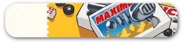

活动官方原文 ↗
“限定武器”卡池
“限定武器”是一场于2024年4月1日至2024年4月4日举办的愚人节活动，活动承诺玩家只需花费10个抽奖券即可获得在一个“取最大值™脉冲枪卡池”的10次抽奖机会，且前10次抽取免费。然而，玩家们却收到了恶搞信息，上面写着“…
活动内容
“限定武器”是一场于2024年4月1日至2024年4月4日举办的愚人节活动，活动承诺玩家只需花费10个抽奖券即可获得在一个“取最大值™脉冲枪卡池”的10次抽奖机会，且前10次抽取免费。然而，玩家们却收到了恶搞信息，上面写着“铛铛！上当啦！”以及“星趴怎么可能有武器池！(~д~)”。 作为安慰奖，该玩家获得了一张个人资料卡。 然后，抽奖按钮将变灰，无法再获得任何奖励。